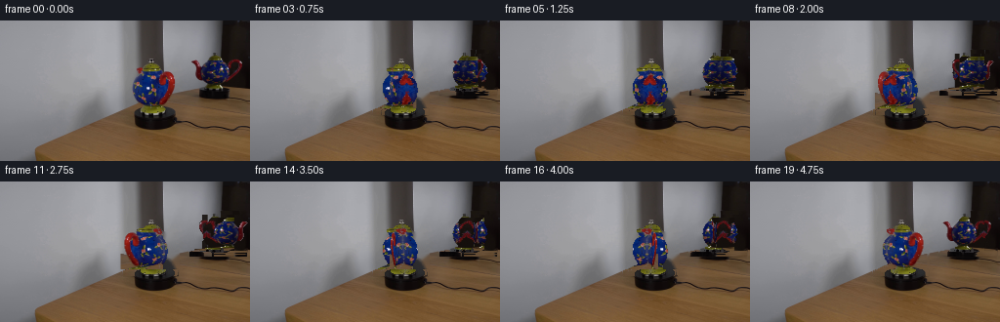
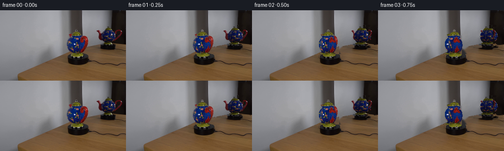
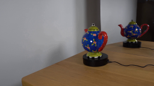
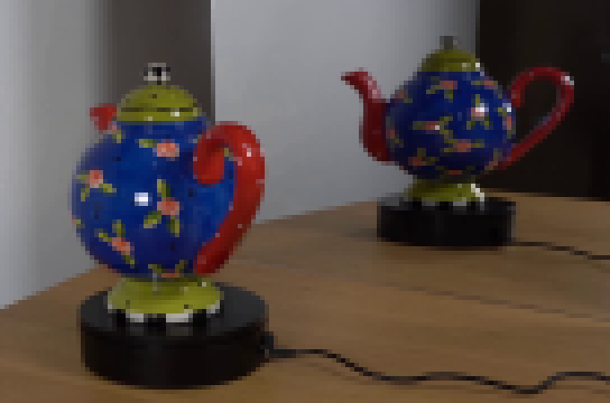
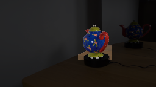
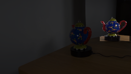
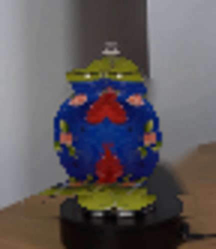

CODING AGENTS AS PIXEL WORLD MODELS
traex/GPT-5.6-Sol · 0121
点击播放 · 原生 RGB 像素
逐轮保存的候选
回放视频、检查图与代码变化。
每份候选均可单独播放。实际图片检查记录在下方工具轨迹中。
候选 01播放与检查图
点击播放 · 原生 RGB 像素


展开代码变化
--- 上一保存版本
+++ 本次保存版本
@@ -0,0 +1,171 @@
+from pathlib import Path
+import cv2
+import numpy as np
+from artifact_io import save
+
+# Image-based, physically motivated turntable animation. The two views of the
+# kettle are lifted from the supplied photograph; no outside assets are used.
+ROOT = Path(__file__).resolve().parent
+N = 20
+
+
+def grab_object(bgr, box):
+ """Conservative foreground extraction initialized from color and a box."""
+ x0, y0, x1, y1 = box
+ hsv = cv2.cvtColor(bgr, cv2.COLOR_BGR2HSV)
+ mask = np.full(bgr.shape[:2], cv2.GC_BGD, np.uint8)
+ mask[y0:y1, x0:x1] = cv2.GC_PR_BGD
+ roi = hsv[y0:y1, x0:x1]
+ sat, val = roi[..., 1], roi[..., 2]
+ colorful = (sat > 34) & (val > 18)
+ vicinity = cv2.dilate(colorful.astype(np.uint8), np.ones((5, 5), np.uint8)) > 0
+ sure = (sat > 72) & (val > 25)
+ sub = mask[y0:y1, x0:x1]
+ sub[vicinity] = cv2.GC_PR_FGD
+ sub[sure] = cv2.GC_FGD
+ sub[:2, :] = sub[-2:, :] = cv2.GC_BGD
+ sub[:, :2] = sub[:, -2:] = cv2.GC_BGD
+ cv2.setRNGSeed(121)
+ bgm = np.zeros((1, 65), np.float64)
+ fgm = np.zeros((1, 65), np.float64)
+ cv2.grabCut(bgr, mask, None, bgm, fgm, 8, cv2.GC_INIT_WITH_MASK)
+ return ((mask == cv2.GC_FGD) | (mask == cv2.GC_PR_FGD)).astype(np.uint8)
+
+
+def make_view(bgr, total, cfg):
+ """Split one photographed view into round body and two side fittings."""
+ h, w = total.shape
+ yy, xx = np.indices((h, w))
+ cx, cy, rx, ry = cfg['ellipse']
+ globe = (((xx-cx)/rx)**2 + ((yy-cy)/ry)**2 <= 1.0)
+ x0, x1, yt, yb = cfg['core']
+ # The globe, lid, stem and green foot are approximately solids of revolution.
+ core_shape = globe | ((xx >= x0) & (xx <= x1) & (yy >= yt) & (yy <= yb))
+ body = (total > 0) & core_shape
+ sx, sy0, sy1 = cfg['spout']
+ hx, hy0, hy1 = cfg['handle']
+ spout = (total > 0) & (xx <= sx) & (yy >= sy0) & (yy <= sy1)
+ handle = (total > 0) & (xx >= hx) & (yy >= hy0) & (yy <= hy1)
+ # Keep all finial/foot pixels in the body even where the simple ellipse ends.
+ leftovers = (total > 0) & ~(body | spout | handle)
+ body |= leftovers
+ return {'src': bgr, 'body': body.astype(np.uint8),
+ 'spout': spout.astype(np.uint8), 'handle': handle.astype(np.uint8),
+ 'cx': float(cx)}
+
+
+def rolled_body(view, angle):
+ """Roll photographed decoration around each horizontal cross-section.
+
+ Mirrored periodic continuation supplies the unseen half of the pot. This
+ gives the correct original view at 0, its reverse at 180 degrees, and a
+ seamless full turn without inventing a second photographic asset.
+ """
+ src, m = view['src'], view['body']
+ out = np.zeros_like(src)
+ alpha = np.zeros(m.shape, np.float32)
+ shift = (angle / np.pi) % 2.0
+ ys = np.flatnonzero(m.any(axis=1))
+ for y in ys:
+ xs = np.flatnonzero(m[y])
+ if not len(xs):
+ continue
+ # Work within each contiguous run, avoiding samples from the old backdrop.
+ cuts = np.r_[0, np.flatnonzero(np.diff(xs) > 1)+1, len(xs)]
+ for a, b in zip(cuts[:-1], cuts[1:]):
+ run = xs[a:b]
+ if len(run) == 1:
+ out[y, run] = src[y, run]
+ alpha[y, run] = 1
+ continue
+ t = (run-run[0]) / float(run[-1]-run[0])
+ q = (t + shift) % 2.0
+ st = np.where(q <= 1, q, 2-q)
+ sample = np.rint(run[0] + st*(run[-1]-run[0])).astype(int)
+ out[y, run] = src[y, sample]
+ alpha[y, run] = 1
+ # One-pixel antialias only outside the solid, retaining crisp photographed detail.
+ alpha = cv2.GaussianBlur(alpha, (3, 3), .42)
+ return out, alpha
+
+
+def projected_part(view, key, angle):
+ """Orthographically project a side fitting during rotation about vertical."""
+ src = view['src']
+ mask = view[key].astype(np.float32)
+ c = np.cos(angle)
+ cx = view['cx']
+ # x' = cx + cos(a)*(x-cx): the fitting becomes edge-on at quarter turns
+ M = np.array([[c, 0, cx*(1-c)], [0, 1, 0]], np.float32)
+ rgb = cv2.warpAffine(src, M, (src.shape[1], src.shape[0]),
+ flags=cv2.INTER_LINEAR, borderMode=cv2.BORDER_CONSTANT)
+ a = cv2.warpAffine(mask, M, (src.shape[1], src.shape[0]),
+ flags=cv2.INTER_LINEAR, borderMode=cv2.BORDER_CONSTANT)
+ # Retain a thin glint at exactly edge-on, but do not let resampling make it broad.
+ if abs(c) < .045:
+ a *= abs(c)/.045
+ return rgb, np.clip(a, 0, 1)
+
+
+def over(dst, rgb, alpha, strength=1.0):
+ a = np.clip(alpha * strength, 0, 1)[..., None]
+ return dst*(1-a) + rgb.astype(np.float32)*a
+
+
+def render_view(background, view, angle):
+ sp = projected_part(view, 'spout', angle)
+ ha = projected_part(view, 'handle', angle)
+ body = rolled_body(view, angle)
+ # Clockwise rotation: the left-side spout passes in front during the first
+ # half turn while the opposite handle passes behind. Reverse on the back half.
+ if np.sin(angle) >= 0:
+ back, front = ha, sp
+ else:
+ back, front = sp, ha
+ canvas = over(background, back[0], back[1], .92)
+ canvas = over(canvas, body[0], body[1])
+ canvas = over(canvas, front[0], front[1])
+ return canvas
+
+
+def main():
+ rgb0 = cv2.cvtColor(cv2.imread(str(ROOT/'first_frame.png')), cv2.COLOR_BGR2RGB)
+ bgr = cv2.cvtColor(rgb0, cv2.COLOR_RGB2BGR)
+ hsv = cv2.cvtColor(bgr, cv2.COLOR_BGR2HSV)
+
+ fm = grab_object(bgr, (124, 37, 185, 103))
+ rm = grab_object(bgr, (192, 28, 255, 82))
+ yy, xx = np.indices(fm.shape)
+ # Black cylinders are stationary platform casings. Green feet rotate with pot.
+ fm &= (((yy < 89) | (hsv[..., 1] > 42)) & ~((yy > 96))).astype(np.uint8)
+ rm &= (((yy < 68) | (hsv[..., 1] > 42)) & ~((yy > 76))).astype(np.uint8)
+
+ # Erase only the moving ceramic/feet. TELEA restores the smooth wall, mirror,
+ # and tabletop while preserving both fixed black turntables and their cords.
+ moving = np.maximum(fm, rm)
+ erase = cv2.dilate(moving, np.ones((3, 3), np.uint8), iterations=1)
+ bg_bgr = cv2.inpaint(bgr, erase*255, 4, cv2.INPAINT_TELEA)
+ bg = cv2.cvtColor(bg_bgr, cv2.COLOR_BGR2RGB).astype(np.float32)
+
+ front = make_view(rgb0, fm, {
+ 'ellipse': (152, 71, 19.2, 20.7), 'core': (140, 166, 39, 95),
+ 'spout': (141, 49, 78), 'handle': (162, 49, 89)})
+ reflection = make_view(rgb0, rm, {
+ 'ellipse': (225, 53, 18.0, 17.2), 'core': (213, 239, 27, 75),
+ 'spout': (212, 35, 66), 'handle': (239, 34, 70)})
+
+ frames = [rgb0.copy()]
+ for i in range(1, N):
+ # One steady revolution in exactly five seconds; sampled at constant 4 fps.
+ angle = 2*np.pi*i/N
+ image = bg.copy()
+ # Mirror reverses apparent angular direction and is farther away/dimmer.
+ image = render_view(image, reflection, -angle)
+ image = render_view(image, front, angle)
+ frames.append(np.clip(np.rint(image), 0, 255).astype(np.uint8))
+ frames = np.stack(frames)
+ assert np.array_equal(frames[0], rgb0)
+ save(frames, ROOT)
+
+if __name__ == '__main__':
+ main()
候选 02播放与检查图
点击播放 · 原生 RGB 像素

展开代码变化
--- 上一保存版本
+++ 本次保存版本
@@ -116,12 +116,13 @@
sp = projected_part(view, 'spout', angle)
ha = projected_part(view, 'handle', angle)
body = rolled_body(view, angle)
- # Clockwise rotation: the left-side spout passes in front during the first
- # half turn while the opposite handle passes behind. Reverse on the back half.
+ # Clockwise rotation viewed from above carries the right-side handle toward
+ # the camera during the first half turn, while the left spout passes behind.
+ # Reverse their depth order on the back half.
if np.sin(angle) >= 0:
+ back, front = sp, ha
+ else:
back, front = ha, sp
- else:
- back, front = sp, ha
canvas = over(background, back[0], back[1], .92)
canvas = over(canvas, body[0], body[1])
canvas = over(canvas, front[0], front[1])
候选 03播放与检查图
可观测工具轨迹
实际执行的命令与返回图片。
命令 1exit 0
/bin/bash -lc "cat prompt.txt && printf '\\n---RULES---\\n' && cat GENERATION_RULES.md && printf '\\n---FILES---\\n' && find . -maxdepth 2 -type f -printf '%p %s bytes\\n' | sort"
命令 2exit 0
/bin/bash -lc "python - <<'PY'
import cv2, numpy as np
im=cv2.imread('first_frame.png')
print(im.shape)
# Save enlarged nearest and crop
cv2.imwrite('.tmp/enlarged.png', cv2.resize(im,None,fx=4,fy=4,interpolation=cv2.INTER_NEAREST))
cv2.imwrite('.tmp/crop.png', cv2.resize(im[25:115,120:256],None,fx=5,fy=5,interpolation=cv2.INTER_NEAREST))
PY"命令 3exit 0
/bin/bash -lc "sed -n '1,240p' artifact_io.py"
命令 4exit 0
/bin/bash -lc "cat > .tmp/testseg.py <<'PY'
import cv2, numpy as np
im=cv2.imread('first_frame.png')
hsv=cv2.cvtColor(im,cv2.COLOR_BGR2HSV)
for name,(x0,y0,x1,y1) in {'front':(126,34,185,102),'mirror':(193,26,255,82)}.items():
mask=np.full(im.shape[:2],cv2.GC_BGD,np.uint8)
mask[y0:y1,x0:x1]=cv2.GC_PR_BGD
# interior probable foreground based saturation/darkness vs backgrounds
roi=hsv[y0:y1,x0:x1]
sat=roi[:,:,1]; val=roi[:,:,2]
yy,xx=np.indices(sat.shape)
sure=(sat>70)&(val>30)
# dark pixels enclosed/near colors become probable foreground
color=(sat>35)&(val>20)
near=cv2.dilate(color.astype(np.uint8),np.ones((5,5),np.uint8))>0
dark=(val<100)&near
sub=mask[y0:y1,x0:x1]
sub[near]=cv2.GC_PR_FGD
sub[sure]=cv2.GC_FGD
# make bbox boundary bg
sub[:2]=cv2.GC_BGD;sub[-2:]=cv2.GC_BGD;sub[:,:2]=cv2.GC_BGD;sub[:,-2:]=cv2.GC_BGD
bgmodel=np.zeros((1,65),np.float64);fgmodel=np.zeros((1,65),np.float64)
cv2.grabCut(im,mask,None,bgmodel,fgmodel,8,cv2.GC_INIT_WITH_MASK)
out=((mask==1)|(mask==3)).astype(np.uint8)*255
# preserve only components touched by sure
cv2.imwrite(f'.tmp/{name}_mask.png',out)
over=im.copy(); over[out==0]=(over[out==0]*.25).astype(np.uint8)
cv2.imwrite(f'.tmp/{name}_over.png',over)
print(name, out.sum()/255, cv2.boundingRect(out))
PY
python .tmp/testseg.py"命令 5exit 0
/bin/bash -lc "cat > generate.py <<'PY'
from pathlib import Path
import cv2
import numpy as np
from artifact_io import save
# Image-based, physically motivated turntable animation. The two views of the
# kettle are lifted from the supplied photograph; no outside assets are used.
ROOT = Path(__file__).resolve().parent
N = 20
def grab_object(bgr, box):
\"\"\"Conservative foreground extraction initialized from color and a box.\"\"\"
x0, y0, x1, y1 = box
hsv = cv2.cvtColor(bgr, cv2.COLOR_BGR2HSV)
mask = np.full(bgr.shape[:2], cv2.GC_BGD, np.uint8)
mask[y0:y1, x0:x1] = cv2.GC_PR_BGD
roi = hsv[y0:y1, x0:x1]
sat, val = roi[..., 1], roi[..., 2]
colorful = (sat > 34) & (val > 18)
vicinity = cv2.dilate(colorful.astype(np.uint8), np.ones((5, 5), np.uint8)) > 0
sure = (sat > 72) & (val > 25)
sub = mask[y0:y1, x0:x1]
sub[vicinity] = cv2.GC_PR_FGD
sub[sure] = cv2.GC_FGD
sub[:2, :] = sub[-2:, :] = cv2.GC_BGD
sub[:, :2] = sub[:, -2:] = cv2.GC_BGD
cv2.setRNGSeed(121)
bgm = np.zeros((1, 65), np.float64)
fgm = np.zeros((1, 65), np.float64)
cv2.grabCut(bgr, mask, None, bgm, fgm, 8, cv2.GC_INIT_WITH_MASK)
return ((mask == cv2.GC_FGD) | (mask == cv2.GC_PR_FGD)).astype(np.uint8)
def make_view(bgr, total, cfg):
\"\"\"Split one photographed view into round body and two side fittings.\"\"\"
h, w = total.shape
yy, xx = np.indices((h, w))
cx, cy, rx, ry = cfg['ellipse']
globe = (((xx-cx)/rx)**2 + ((yy-cy)/ry)**2 <= 1.0)
x0, x1, yt, yb = cfg['core']
# The globe, lid, stem and green foot are approximately solids of revolution.
core_shape = globe | ((xx >= x0) & (xx <= x1) & (yy >= yt) & (yy <= yb))
body = (total > 0) & core_shape
sx, sy0, sy1 = cfg['spout']
hx, hy0, hy1 = cfg['handle']
spout = (total > 0) & (xx <= sx) & (yy >= sy0) & (yy <= sy1)
handle = (total > 0) & (xx >= hx) & (yy >= hy0) & (yy <= hy1)
# Keep all finial/foot pixels in the body even where the simple ellipse ends.
leftovers = (total > 0) & ~(body | spout | handle)
body |= leftovers
return {'src': bgr, 'body': body.astype(np.uint8),
'spout': spout.astype(np.uint8), 'handle': handle.astype(np.uint8),
'cx': float(cx)}
def rolled_body(view, angle):
\"\"\"Roll photographed decoration around each horizontal cross-section.
Mirrored periodic continuation supplies the unseen half of the pot. This
gives the correct original view at 0, its reverse at 180 degrees, and a
seamless full turn without inventing a second photographic asset.
\"\"\"
src, m = view['src'], view['body']
out = np.zeros_like(src)
alpha = np.zeros(m.shape, np.float32)
shift = (angle / np.pi) % 2.0
ys = np.flatnonzero(m.any(axis=1))
for y in ys:
xs = np.flatnonzero(m[y])
if not len(xs):
continue
# Work within each contiguous run, avoiding samples from the old backdrop.
cuts = np.r_[0, np.flatnonzero(np.diff(xs) > 1)+1, len(xs)]
for a, b in zip(cuts[:-1], cuts[1:]):
run = xs[a:b]
if len(run) == 1:
out[y, run] = src[y, run]
alpha[y, run] = 1
continue
t = (run-run[0]) / float(run[-1]-run[0])
q = (t + shift) % 2.0
st = np.where(q <= 1, q, 2-q)
sample = np.rint(run[0] + st*(run[-1]-run[0])).astype(int)
out[y, run] = src[y, sample]
alpha[y, run] = 1
# One-pixel antialias only outside the solid, retaining crisp photographed detail.
alpha = cv2.GaussianBlur(alpha, (3, 3), .42)
return out, alpha
def projected_part(view, key, angle):
\"\"\"Orthographically project a side fitting during rotation about vertical.\"\"\"
src = view['src']
mask = view[key].astype(np.float32)
c = np.cos(angle)
cx = view['cx']
# x' = cx + cos(a)*(x-cx): the fitting becomes edge-on at quarter turns
M = np.array([[c, 0, cx*(1-c)], [0, 1, 0]], np.float32)
rgb = cv2.warpAffine(src, M, (src.shape[1], src.shape[0]),
flags=cv2.INTER_LINEAR, borderMode=cv2.BORDER_CONSTANT)
a = cv2.warpAffine(mask, M, (src.shape[1], src.shape[0]),
flags=cv2.INTER_LINEAR, borderMode=cv2.BORDER_CONSTANT)
# Retain a thin glint at exactly edge-on, but do not let resampling make it broad.
if abs(c) < .045:
a *= abs(c)/.045
return rgb, np.clip(a, 0, 1)
def over(dst, rgb, alpha, strength=1.0):
a = np.clip(alpha * strength, 0, 1)[..., None]
return dst*(1-a) + rgb.astype(np.float32)*a
def render_view(background, view, angle):
sp = projected_part(view, 'spout', angle)
ha = projected_part(view, 'handle', angle)
body = rolled_body(view, angle)
# Clockwise rotation: the left-side spout passes in front during the first
# half turn while the opposite handle passes behind. Reverse on the back half.
if np.sin(angle) >= 0:
back, front = ha, sp
else:
back, front = sp, ha
canvas = over(background, back[0], back[1], .92)
canvas = over(canvas, body[0], body[1])
canvas = over(canvas, front[0], front[1])
return canvas
def main():
rgb0 = cv2.cvtColor(cv2.imread(str(ROOT/'first_frame.png')), cv2.COLOR_BGR2RGB)
bgr = cv2.cvtColor(rgb0, cv2.COLOR_RGB2BGR)
hsv = cv2.cvtColor(bgr, cv2.COLOR_BGR2HSV)
fm = grab_object(bgr, (124, 37, 185, 103))
rm = grab_object(bgr, (192, 28, 255, 82))
yy, xx = np.indices(fm.shape)
# Black cylinders are stationary platform casings. Green feet rotate with pot.
fm &= (((yy < 89) | (hsv[..., 1] > 42)) & ~((yy > 96))).astype(np.uint8)
rm &= (((yy < 68) | (hsv[..., 1] > 42)) & ~((yy > 76))).astype(np.uint8)
# Erase only the moving ceramic/feet. TELEA restores the smooth wall, mirror,
# and tabletop while preserving both fixed black turntables and their cords.
moving = np.maximum(fm, rm)
erase = cv2.dilate(moving, np.ones((3, 3), np.uint8), iterations=1)
bg_bgr = cv2.inpaint(bgr, erase*255, 4, cv2.INPAINT_TELEA)
bg = cv2.cvtColor(bg_bgr, cv2.COLOR_BGR2RGB).astype(np.float32)
front = make_view(rgb0, fm, {
'ellipse': (152, 71, 19.2, 20.7), 'core': (140, 166, 39, 95),
'spout': (141, 49, 78), 'handle': (162, 49, 89)})
reflection = make_view(rgb0, rm, {
'ellipse': (225, 53, 18.0, 17.2), 'core': (213, 239, 27, 75),
'spout': (212, 35, 66), 'handle': (239, 34, 70)})
frames = [rgb0.copy()]
for i in range(1, N):
# One steady revolution in exactly five seconds; sampled at constant 4 fps.
angle = 2*np.pi*i/N
image = bg.copy()
# Mirror reverses apparent angular direction and is farther away/dimmer.
image = render_view(image, reflection, -angle)
image = render_view(image, front, angle)
frames.append(np.clip(np.rint(image), 0, 255).astype(np.uint8))
frames = np.stack(frames)
assert np.array_equal(frames[0], rgb0)
save(frames, ROOT)
if __name__ == '__main__':
main()
PY
python generate.py
python - <<'PY'
import numpy as np
from PIL import Image
im=np.array(Image.open('first_frame.png'))
a=np.array(Image.open('frames/00.png'))
print('frame0 exact',np.array_equal(im,a), 'shape',a.shape)
PY"命令 6exit 0
/bin/bash -lc "python - <<'PY'
import cv2
for n in ['front','mirror']:
m=cv2.imread('.tmp/'+n+'_mask.png',0)
x,y,w,h=cv2.boundingRect(m)
cv2.imwrite('.tmp/'+n+'_mask_crop.png',cv2.resize(m[max(0,y-3):y+h+3,max(0,x-3):x+w+3],None,fx=6,fy=6,interpolation=cv2.INTER_NEAREST))
PY"命令 7exit 0
/bin/bash -lc "python - <<'PY'
from PIL import Image
import numpy as np
for i in [4,5,6,14,15,16]:
a=np.array(Image.open(f'frames/{i:02}.png'))
Image.fromarray(a[25:108,118:190]).resize((432,498)).save(f'.tmp/f{i}.png')
PY"命令 8exit 0
/bin/bash -lc "python generate.py && python - <<'PY'
from pathlib import Path
from PIL import Image
import numpy as np
f=np.stack([np.array(Image.open(f'frames/{i:02}.png')) for i in range(20)])
orig=np.array(Image.open('first_frame.png'))
print(f.shape,f.dtype,'frame0',np.array_equal(f[0],orig),'changed pixels',[(i,int(np.any(f[i]"'!=f[i-1],axis=2).sum())) for i in range(1,20)])
z=np.load('"'pixels.npz')['pixels']; print('pixels',z.shape,z.dtype,'outputs',Path('index.html').stat().st_size)
PY"视觉工具实际返回图片 1

视觉工具实际返回图片 2

视觉工具实际返回图片 3

视觉工具实际返回图片 4

视觉工具实际返回图片 5
视觉工具实际返回图片 6

视觉工具实际返回图片 7

视觉工具实际返回图片 8

保存候选 3 份；完成命令 8 次；可验证图片返回 8 张。原始 API 响应与完整日志保留在本地。